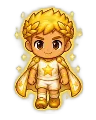

Wiki › Adversários › A Lenda da Copa

A Lenda da Copa
Nível 200 Chefão Brasil
- Fôlego
- ❤️ 960.000
- Ataque
- ⚔️ 713
- XP
- ⭐ 2.107.075
- Tostões
- 🪙 50.000–80.000
- Chuta de longe
- sim
- Vem te desafiar
- sim
O que deixa cair
| Item | QuantidadeQtd. | Chance | Raridade |
|---|---|---|---|
| 1–3 | 100% | Épico | |
| 2–4 | 100% | Comum | |
| 1 | 100% | Épico | |
| ✨ 1 item MÍTICO (Chuteira Campeã do Mundo, Camisa Campeã do Mundo, Estrela do Campeão) | começa em 10% e sobe até 30% a cada vitória sem ele | ||
Como ler: a % é a chance de cair em cada adversário vencido. Se você estiver muito acima do nível dele, a chance diminui (6 a 9 níveis acima: 80%; 10 a 14: 40%; 15 a 19: 15%; 20 ou mais: nada). Item pedido por uma missão que você aceitou cai com a chance cheia.
Onde aparece
🧭 Viagem: ✈️ Pegue o avião para Rio de Janeiro, Brasil (a partir do nível 112) — no Brasil, o aeroporto fica na Cidade, com a Comissária Luana.
🧭 Caminho: de lá: Rio de Janeiro → Arena da Copa do Mundo
Missões com este adversário
- A Copa do Mundo (Nível 192)
O que ele diz
Esta é a final. Não existe amanhã!
Mostre tudo o que o campinho te ensinou!
Só um campeão levanta a taça!